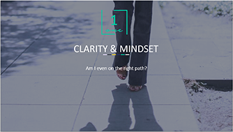

most desired result. This lead to SEVERAL interviews (and a few offers!) in the first month.
Ashley is so passionate about what she does and I really felt like she geniunely wanted to
help me. I am so excited for future participants!
Sarah D.
Philadelphia, PA
I created the Limitless Career Lab
to help you go through the process that
took me YEARS to figure out on my
own, in a matter of weeks.
Limitless Career Lab is about
so much MORE than landing
your dream job.
It's about being a parent who can provide for your family,
or a career person who makes positive change in the world
by playing BIG (and inspiring others to do the same).
It's about becoming the successful, empowered, confident
person you know you were ment to be.
Here's the deal: confidence comes with knowledge.
Everyday I see highly competent people lose confidence in
themselves because they don't know how to get job offers.
I'm here to remedy that.
Limitless Career Lab takes the guesswork OUT if the job
hunt, and helps you:
- Hone in on your best fitting job options.
- Write effective resumes and cover letters.
- Learn to master networking (so you can get more job offers).
- Negotiate a strong new salary.
- Build confidence and empowerment.
These are skills that will last a lifetime.
The Program Includes:
- 8 powerful video training modules (released weekly)
- Weekly exercises that correspond to each module
- 3 social media tutorials to help you leverage the power of Linkedln and Twitter
- 4 Group Coaching Q&A calls, where I'll answer your questions LIVE on the line
- 30+ page workbook with all of your and worksheets in one place
-
Access to a private Facebook group where you can network with other participants and stay in
touch with Ashley
-
Unlimited access to your course materials in a password-protected membership site (expires one
year from your purchase date)
You get instant access to this 8 week program as your sign up below.
Your 8-week program begins as soon as you click the button below.
Sign me up!
"Before working with Ashley, I was confused, unable to commit
to a decision, and un-focused. After working with Ashley, I was
clear on what I wanted (and deserved) and clear on how to
make my goals happen with attainable actions and focus.
I'm so glad I completed the Limitless Career Lab because without
Ashley I would not be even close to the clarity and focus I have
now. Ash has helped me find my place in the world and most
important, she upgraded my beliefs about myself. Her energy and passion for servicing
others is inspiring. She has truly changed my life."
Leah N.
Lancaster, PA
From underpaid admin assistant to
mulitple job offers in 6 weeks
(My Story)
I remember it like it was yesterday…
After years of preparation for my dream job in counter-
�terrorism – which included mastering TWO foreign
�languages and earning my master’s degree at one of the �
top 20 educational institutions in the world – I returned �
home to Los Angeles and began searching for employment.
And landed… a dead-end admin position. ��How could this happen??
I had done everything “right.”
How was it that I couldn’t even manage to get a job in my
�desired industry – let alone something that reflected the
�level of education and experience I’d spent years working
�so hard for?
��Every day in my first job was spent ordering cupcakes for
�office parties and processing travel expenses for executives’ �
exciting business trips to locations I never thought I’d get to
�see.
I was in such FEAR that I would never live my purpose – or be the woman
�I truly wanted to be – that I could hardly even hear the persistent whisper
�in the back of my head telling me I was meant for more…
I let that cubicle drag me to the depths of despair because I didn’t know HOW or IF I could actually find something �
better.
Most of all, I was scared it just wouldn’t happen for me. I felt hopeless.
Fast forward a few years ...
Since that day, I have managed a high-level program for the Pentagon (yes, I did go on to land that “dream job” …
�(more on that shortly), I have spoken on stages such as TEDxBerkeley, and I have been featured in dozens of �
publications and TV programs, including:
I’ve helped hundreds of 20 and 30somethings men and women around the country land their dream jobs (even in �
cities or countries they’ve never visited before!), negotiate salary bumps, and make career changes that are in �
alignment with who they really are.
Best of all, I LOVE what I do.
So what changed?
How did I go from feeling stuck in a dead-end job with no
�opportunities in sight, to working as one of the youngest
�management professionals for the Pentagon, to passionate
�career coach and entrepreneur in just a few short years?
It all began with a choice.
After months of feeling miserable and going through more
�pints of Ben & Jerry’s than I care to admit, I finally decided to �
do whatever it took to make a change.
I quit my dead-end job in LA and moved to Washington, D.C. �
(with zero job prospects and zero professional contacts).
In the span of 6 weeks, I went to 90 events, had coffee
with �200 people, and landed 3 job offers.
I accepted my dream job at the Pentagon, which meant that�
I went from an executive assistant to executive… All in one
�job-hunt.
Not to mention, I tripled my salary.
I thought I was set for life.
Finally, all my hard work had paid off.
Something was still missing ...
I didn’t want to admit it to myself, but after the initial glow of my new salary and sparkly D.C. life began to fade,
�it slowly dawned on me that the dream I had pursued for so long might not be the best fit for me after all.
At first, it was the pervasive culture of paternalism and sexism that got under my skin – but getting hit on by my
�much-older coworkers was a manageable annoyance.
It was my unexpected fear of bloodshed that soon became the bigger problem.
How was I going to be a spy, if I couldn’t even hold a gun?!
This sent me into a tailspin...
I remember feeling like my career, my passion and my identity were all in conflict with one another.
More than anything, I felt completely alone.
Turns out, I wasn’t alone at all. In fact…
75% of the U.S. population is hiding some part of their identity at work (Reuters).
I tried to stick it out.
It got to the point where every day in my
job felt like a waste of time.
-
I was scared and hopeless that I would never find my purpose in the workforce.
-
I worried that I would spend my entire life counting down to Fridays, never finding a career that �
energized and excited me.
-
I was overwhelmed and upset by the idea of letting life happen to me, just taking jobs just because I �
“should take what I can get,” or because I didn’t really know what I wanted.
-
I knew deep down inside that I was just holding onto my “plan” for the sake of having one.
I tried talking to friends about my predicament, but somehow the conversation always turned back to them and �
their careers.
Everyone, it seemed, was experiencing a crisis of their own – and they wanted to know how I’d managed to triple
�my income, land so many interviews, and become so efficient at networking.
I didn't know it at the time, but
my new path as a career
coach had just begun.
Pretty soon, my friends were asking if they could bring their �
friends along to our coffee dates or weekend brunches.
Instead of talking about bad dates or annoying roommates, we
�would map out how they were going to find their purpose, make �
a career pivot, network their way into job interviews, land more �
job offers, and negotiate a new salary.
I’ll never forget the day I arrived at Starbucks to meet a friend,
�and she was accompanied by no less than eight of her friends�
– all of them crammed around a tiny table.
“They heard you help people get results,” she said, by way of
�explanation.
It seemed ironic that I was helping others live their purpose
�when I was still so unclear on mine…
Then came the "breakthrough"
(which looked a lot like a breakdown at the time)
I faced the music, and I quit my job in D.C. Next, I moved home to L.A. The fear and uncertainty I’d been dodging �
for so long caught up with me, and I felt like a complete failure.
After spending way too many nights up late researching career options, I knew I needed to take massive action, so
�I borrowed money to hire a life coach who empowered me to move forward.
It was a life-changing decision.
She helped me overcome the emotional hangover I felt from realizing that my dream job wasn’t so dreamy. More �
importantly, she helped me recover the confidence and clarity I’d lost along the way.
“What lights you up?” she asked me.
I reflected on the weeks in DC I spent as a job hunting and job-hopping master, and realized that it was the thrill
�of the hunt – not the job itself – that lit me up and made me come alive.
I truly loved job hunting and helping people find their purpose…
(And I always had a knack for it.)
I loved networking, rebranding my resume, negotiating for my salaries, and helping other people find their purpose
�and dream jobs.
Most of all, I loved feeling like I had job security. I became so great at networking that I realized I’d never worry
�about my career again—I was always an email away from another job offer.
When I realized this, I finally had the power to eliminate the doubts that held me back so that I could step into
�my true purpose (helping YOU embrace yours).
The Limitless Career Lab
Here's what's included
-
8 Video Modules Released Weekly (8 Hours of Instruction)
-
3 Tutorials
-
4 LIVE Group Coaching Calls
-
Comprehensive Workbook With Templates & Exercises
-
Access to a Private Facebook Group
-
One Year Access To Modules
Click The Folders Below To Learn More About Each Training!
Module 1: Clarity
Explore Module 1
Find your purpose & learn which jobs are an exact fit for you. The cornerstone
�of any successful job hunt is in learning which exact jobs align with your skills and
�
talents. While you may have an idea on what interests you, this module is here to �
help you hone in on the best options for you, and awaken you to all the sorts of
�career paths you may not have considered.
Module #1: Clarity
Find your purpose + hone in on your options

-
Get an answer to the question, “Am I even on the right track?”
-
Become more aligned with your true purpose.
-
Get more clear on your gifts – and how to translate them into �
the right jobs for you (this will save you endless hours of applying
for the wrong jobs!).
-
Shift your perspective and cultivate a success mindset
-
Make a plan for where you’re going in your life/career, and �
HOW to get there.
+ TUTORIAL #1: How to Leverage LinkedIn for More Clarity On �
The Best Jobs For You.
Module 2: Elevator Pitch
Explore Module 2
Speak about yourself in a way that inspires other people to help you in your
�job hunt and career. One of the biggest mistakes that job seekers make is in
�forgetting to create a powerful answer to the prompt "tell me about yourself"--
�also known as their elevator pitch. This module is here for you to learn exactly �
how to answer this common question in a way that wows your interviewer and �
inspires people to help you with your job hunt while you're out networking.
Module #1: Clarity
Find your purpose + hone in on your options
-
Get an answer to the question, “Am I even on the right track?”
-
Become more aligned with your true purpose.
-
Get more clear on your gifts – and how to translate them into �
the right jobs for you (this will save you endless hours of applying
for the wrong jobs!).
-
Shift your perspective and cultivate a success mindset
-
Make a plan for where you’re going in your life/career, and �
HOW to get there.
+ TUTORIAL #1: How to Leverage LinkedIn for More Clarity On �
The Best Jobs For You.
Module 3: Resume
Explore Module 3
Learn how to translate your experiences into a resume that stands out in �
the pile. The average amount of time a recruiter spends on your resume is six �
seconds, and for that reason, your resume needs to WOW them. This module �
will teach you exactly how to write a resume like a pro, and includes templates
�for you to use and reuse!
Module #1: Clarity
Find your purpose + hone in on your options
-
Get an answer to the question, “Am I even on the right track?”
-
Become more aligned with your true purpose.
-
Get more clear on your gifts – and how to translate them into �
the right jobs for you (this will save you endless hours of applying
for the wrong jobs!).
-
Shift your perspective and cultivate a success mindset
-
Make a plan for where you’re going in your life/career, and �
HOW to get there.
+ TUTORIAL #1: How to Leverage LinkedIn for More Clarity On �
The Best Jobs For You.
Module 4: Cover Letter
Explore Module 4
Learn how to write a cover letter that inspires interviewers. While most �
hiring managers admit that they don't read cover letters, the tough reality is
�that they DO read them when they're wavering on you as a candidate. For
this reason, you'll learn how to write a powerful cover letter, and you'll be
�supported with templates to use and reuse in the process.
Module #1: Clarity
Find your purpose + hone in on your options
-
Get an answer to the question, “Am I even on the right track?”
-
Become more aligned with your true purpose.
-
Get more clear on your gifts – and how to translate them into �
the right jobs for you (this will save you endless hours of applying
for the wrong jobs!).
-
Shift your perspective and cultivate a success mindset
-
Make a plan for where you’re going in your life/career, and �
HOW to get there.
+ TUTORIAL #1: How to Leverage LinkedIn for More Clarity On �
The Best Jobs For You.
Module 5: Targeted Networking
Explore Module 5
Get clear on who you need to reach out to. Throughout this process, �
you'll learn who you need to network with and HOW to find them. This
�means learning how to find the right email addresses, and learning how
�to leverage tools like Linkedin to find hiring managers. You'll also learn �
how to leverage your college alumni network even years after �graduating.
Module #1: Clarity
Find your purpose + hone in on your options
-
Get an answer to the question, “Am I even on the right track?”
-
Become more aligned with your true purpose.
-
Get more clear on your gifts – and how to translate them into �
the right jobs for you (this will save you endless hours of applying
for the wrong jobs!).
-
Shift your perspective and cultivate a success mindset
-
Make a plan for where you’re going in your life/career, and �
HOW to get there.
+ TUTORIAL #1: How to Leverage LinkedIn for More Clarity On �
The Best Jobs For You.
Module 6: Cold Networking
Explore Module 6
Learn how to write the perfect emails to people who can hire you.
�This module is going to teach you exactly how to get in front of people
�who can hire you-- people you don't know-- and how you can �
communicate with them, both in person and over email.
Module #1: Clarity
Find your purpose + hone in on your options
-
Get an answer to the question, “Am I even on the right track?”
-
Become more aligned with your true purpose.
-
Get more clear on your gifts – and how to translate them into �
the right jobs for you (this will save you endless hours of applying
for the wrong jobs!).
-
Shift your perspective and cultivate a success mindset
-
Make a plan for where you’re going in your life/career, and �
HOW to get there.
+ TUTORIAL #1: How to Leverage LinkedIn for More Clarity On �
The Best Jobs For You.
Module 7: Master The Interview
Explore Module 7
Once the job interviews start flowing, you'll need to learn how to be
�memorable for the interview. This means having polished answers to �
some of the hardest interview questions, and knowing exactly what
�recruiters want to hear.
Module #1: Clarity
Find your purpose + hone in on your options
-
Get an answer to the question, “Am I even on the right track?”
-
Become more aligned with your true purpose.
-
Get more clear on your gifts – and how to translate them into �
the right jobs for you (this will save you endless hours of applying
for the wrong jobs!).
-
Shift your perspective and cultivate a success mindset
-
Make a plan for where you’re going in your life/career, and �
HOW to get there.
+ TUTORIAL #1: How to Leverage LinkedIn for More Clarity On �
The Best Jobs For You.
Module 8: Salary Negotiation
Explore Module 8
Get a raise before you sign the dotted line. One of the biggest mistakes�
job seekers make is in entering interview conversations without a plan of
�how to talk about money. In this module, you'll learn how clients are getting �
a 20% pay increase in their negotiations. You'll get access to templates and �
scripts you can use to take the guesswork out of salary negotiation.
Module #1: Clarity
Find your purpose + hone in on your options
-
Get an answer to the question, “Am I even on the right track?”
-
Become more aligned with your true purpose.
-
Get more clear on your gifts – and how to translate them into �
the right jobs for you (this will save you endless hours of applying
for the wrong jobs!).
-
Shift your perspective and cultivate a success mindset
-
Make a plan for where you’re going in your life/career, and �
HOW to get there.
+ TUTORIAL #1: How to Leverage LinkedIn for More Clarity On �
The Best Jobs For You.
Before working with Ashley in the Limitless Career Lab, I was
�unsatisfied in the retail jobs I worked, but unable to move out �
of these fields. I was supporting my filmmaking work out of
�pocket, and not able to get a job in my field despite having a
�BFA in film and a certificate in Digital Filmmaking. Most of all,
�I was your typical disenfranchised millennial.
After joining Ashley’s program, I was employed in the entertainment
�industry working regular office hours- two things I previously thought
�were incompatible! I also become very aware of an incredible number of opportunities in �
my field- truly a mindset of abundance, and I no longer feel trapped in my current role. I am
�now using my education, my talents, and working a job that I can honestly say I love.
I'm so glad I did this because Ashley's tips have stayed with me far beyond the course, and �
have helped me not only in securing employment, but in my personal artistic endeavors as
�well. Her networking and job-hunting tips are timeless, but the course itself was highly �
tailored to my individual needs at the time. She helped me get past a huge professional
�block, and my career has soared since taking the course. I can't recommend her enough!��
Rory Gory�
Los Angeles
Sign me up!
It's Time To Say "Yes" To The
Career & Life You Deserve...
77% of retired Americans said they regret “some element” of their
�career and 33% of retired Americans regret their entire career �
altogether.
It’s fair to say most people aren’t happy.
Ironically, we often listen to “most people”—friends, family and
�colleagues – in our career decisions. This translates into mediocre
�jobs that aren’t in alignment with our gifts and desires.
I want something different for you…
You deserve to look back and say, “I did this.” �And to feel proud of what you contributed.
Whether you are a student or recent grad looking to ace the job hunt, or an experienced professional who desires a
�job/career change, Limitless Career Lab will give you the lasting tools and support you need.
John Assaraf famously said, “When you’re interested, you’ll do what’s convenient. When you’re committed, you’ll
�do whatever it takes.”
Put simply, highly successful people are willing to do what others aren’t. And you deserve to embody the unique
�brilliance that you are.
I’m here to help you discover the answer to that question, and make your dream career a reality in 8 weeks or less.
Click here to get started NOW.
To your success,
Ashley Stahl
The Limitless Career Lab
Here's what's included
-
8 Video Modules Released Weekly (8 Hours of Instruction)
-
3 Tutorials
-
4 LIVE Group Coaching Calls
-
Comprehensive Workbook With Templates & Exercises
-
Access to a Private Facebook Group
-
One Year Access To Modules
Pay in Full $1,997
4 Monthly
Payments of $569
Sign me up!
Love It or your money back
30-day guarantee!
I have spent years creating and perfecting the curriculum for Limitless
Career Lab, though my own experience, research and working with
hundreds of people as a career coach. As long as your are committed
(and do the work), this program will absolutely help you get results...
Which is why I happily offer a 30-day money-back guarantee. No
questions asked! I know you won't need or want it, but it's there for
your peace of mind.
Frequently Asked Questions
When does the program begin?
As soon as you sign up! Limitless Career Lab is a home study course, designed in such a way that
�you can join at any time! However, be sure to take advantage of our fast-action bonuses (available �
for a limited time only). Click here to get started.
What does it look like to go through this program on a weekly basis?
��Do I need to supplement what I learn in this program with anything else?
��
How do the Q&A calls work?��
Do you offer payment plans?
Can I keep in touch with you (and other participants) after the program ends?�
What if I don’t like the product?��
How do I know if this the right time for me to take the course?��
Do I need to invest in the full course, or can I just purchase certain modules?��
Should I be hiring a private coach instead of investing in this course?��
I'm not a millennial. Is there a reason I should not take this course?��
Sign me up!